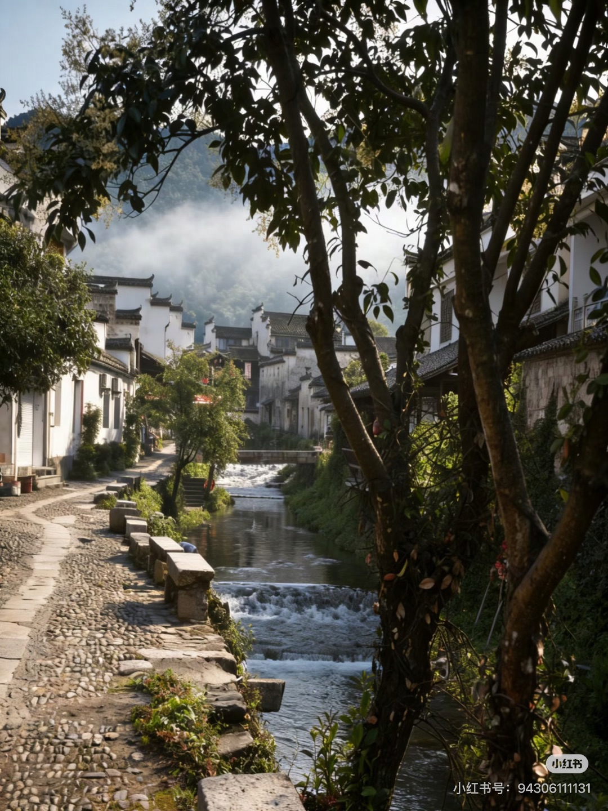
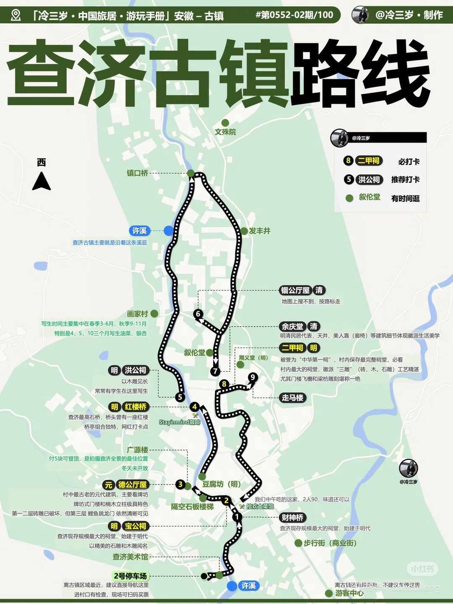
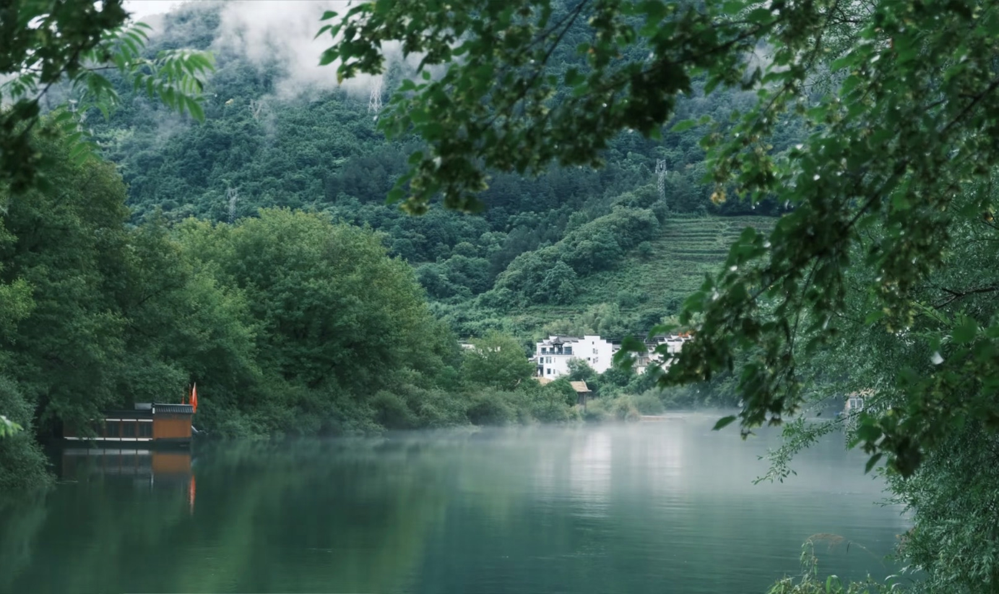
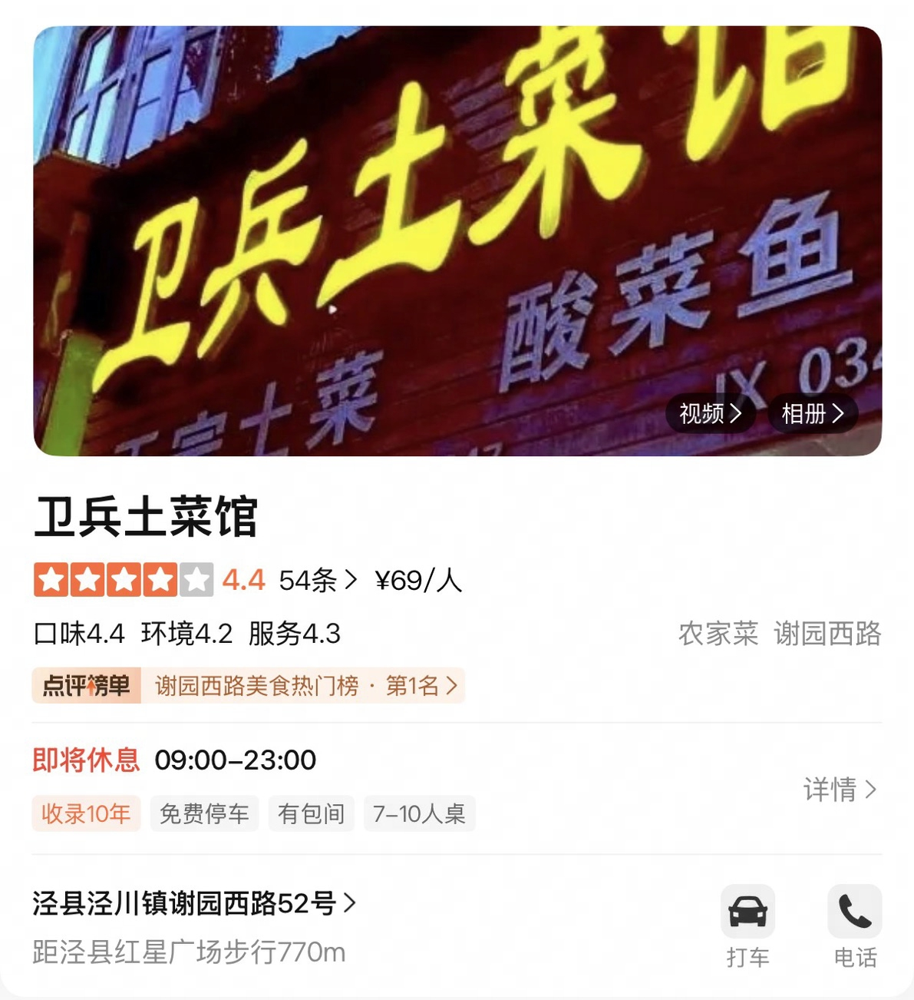
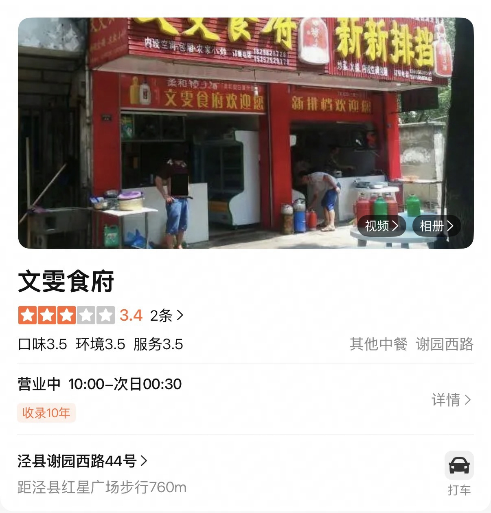
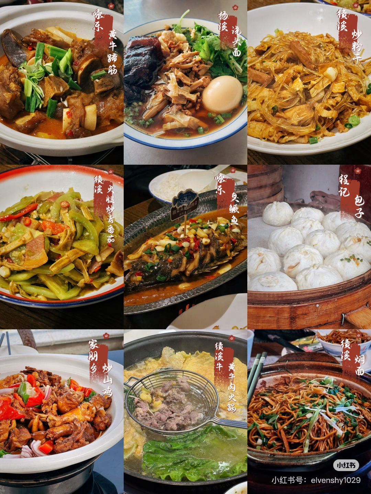
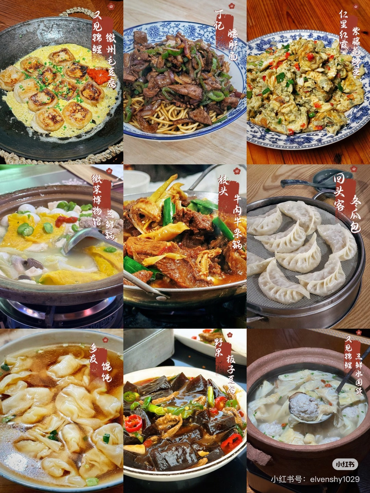

📌 行程概览
| 项目 | 内容 |
|---|---|
| 出行日期 | 2026年6月19日（周五）- 6月21日（周日） |
| 天数 | 3天2晚（不请假） |
| 目的地 | 安徽 · 泾县（查济+桃花潭+宣纸园）+ 绩溪（龙川+老街） |
| 核心体验 | 桃花潭晨雾旅拍 · 竹筏漂流 · 宣纸非遗体验 · 徽派古村慢游 |
| 预算（2人） | 约 3,000 - 4,900 元（含旅拍） |
| 季节提示 | 6月皖南已入梅雨季，必带雨具，气温 25-33°C |
🚄 高铁车次（已确认 · 务必抢票）
| 班次 | 日期 | 时间 | 车次 | 单价 | 2人 | 开售 |
|---|---|---|---|---|---|---|
| 杭州东 → 泾县（黄山北中转） | 06/19 周五 | 09:33-12:04 | — | ¥173.5 | ¥347 | 06/05 10:00 |
| 泾县 → 绩溪北 | 06/20 周六 | 21:29-21:56 | G7745 | ¥32.5 | ¥65 | 06/06 10:00 |
| 绩溪北 → 杭州东 | 06/21 周日 | 18:31-19:49 | D5580 | ¥99 | ¥198 | 06/07 10:00 |
🎫 抢票提醒：在 12306 App 提前"预约下单"，开售时间到自动秒杀。端午热门线路必须提前抢！
🗺️ 路线图
Day 1（周五）：杭州 09:33 ──高铁──► 泾县 12:04 ──打车──► 查济古村（自由拍照）──► 桃花潭西岸（住仙渡民宿·看打铁花🎆） Day 2（周六）：仙渡民宿 04:00 ──► 西岸渡口晨雾旅拍+竹筏 ──► 宣纸文化园 ──► 泾县 21:29 ──高铁──► 绩溪 21:56 Day 3（周日）：龙川早班游 ──► 绩溪老街慢游 ──► 绩溪北 18:31 ──高铁──► 杭州 19:49
📅 Day 1（6/19 周五）：杭州 → 泾县 → 查济 → 桃花潭
关键词：高铁直达 · 烟雨古村 · 自由拍照 · 打铁花🎆
| 时间 | 安排 | 交通/备注 |
|---|---|---|
| 09:00 | 抵达杭州东站候车 | — |
| 09:33 | 杭州东 → 泾县（黄山北中转停27分） | 高铁 2h31m / ¥173.5 |
| 12:04 | 抵达泾县站 | — |
| 12:30 | 泾县站附近午餐：臭鳜鱼、泾县锅巴、蕨菜炒腊肉 | 步行5min |
| 13:30 | 打车前往 查济古村（约1h，约80-100元） | 滴滴/高德 |
| 14:30 | 抵达查济，雨中漫步古村，边玩边拍照记录 | 门票60/人 |
| 16:30 | 离开查济，打车前往 桃花潭西岸（约20min） | 约30-40元 |
| 17:00 | 抵达桃花潭，入住 仙渡民宿 | — |
| 17:30 | 休息整顿，民宿附近散步 | — |
| 18:30 | 晚餐（民宿/桃花潭附近农家菜） | — |
| 20:00 | ⭐ 桃花潭东岸·烟花+打铁花🎆（在景区即可观赏） | 端午特别活动 |
| 21:30 | 返回仙渡民宿休息，早睡（次日4:00起床） | — |

▲ 查济古村：皖南最大古村落，明清三代建筑保存完好，溪水穿村而过，旅拍圣地
🗺️ 查济游览路线图

▲ 查济古镇游览路线参考图（图源小红书 · @冷三岁）
🏠 住宿
- 桃花潭仙渡民宿 ✅ 已预订
- 位置：桃花潭西岸，步行即到西岸渡口（Day 2 晨雾拍摄点）
- 优势：免去次日凌晨赶路，起床即可拍晨雾
📅 Day 2（6/20 周六）：桃花潭晨雾旅拍 + 竹筏 + 宣纸园 → 绩溪
关键词：桃花潭晨雾旅拍 · 竹筏漂流 · 非遗体验 · 高铁夜行
| 时间 | 安排 | 交通/备注 |
|---|---|---|
| 04:00 | ⭐ 起床！ 做妆造（如约了旅拍摄影师） | 旅拍899-1299/人，也可自己拍 |
| 05:00 | 步行前往 西岸渡口，晨雾正浓 | 民宿出门即到 |
| 05:30 | ⭐ 桃花潭晨雾旅拍（黄金时段！晨雾+无人+柔光） | ⚠️ 7点多晨雾就散了 |
| 07:30 | 逛 汪伦墓 → 踏歌古岸 → 怀仙阁（追寻李白足迹） | 步行 |
| 08:30 | ⭐ 万家酒楼坐竹筏（早班竹筏，晨雾未散尽） | 30-50元/人 |
| 09:30 | 桃花潭附近吃早餐（古镇小吃/油条豆浆） | — |
| 10:30 | 自由漫步万村老街、太白楼 | 步行 |
| 12:00 | 桃花潭附近午餐：溪鱼、农家菜 | — |
| 13:30 | 打车前往 中国宣纸文化园（约30min，60-80元） | — |
| 14:00 | ⭐ 参观宣纸制作全流程，亲手捞一张宣纸作为纪念（约1.5h） | — |
▲ 中国宣纸文化园：曲面流线型建筑本身就值得打卡
▲ 千年非遗"捞纸"工艺：多人协作，揭起一张完整的大尺幅宣纸
| 16:00 | 回泾县县城（约30min） | — |
| 16:30 | 泾县老街闲逛+采购伴手礼（宣纸、宣笔、笋干、山核桃） | — |
| 18:00 | 泾县晚餐：臭鳜鱼、笋干土鸡、河鲜 | — |
| 20:30 | 取行李 → 泾县站 | — |
| 21:29 | 泾县 → 绩溪北（G7745） | 高铁 27min / ¥32.5 |
| 21:56 | 抵达绩溪北 | — |
| 22:00 | 步行/打车 → 格林豪泰智选酒店（绩溪县高铁北站店） 入住 | 距高铁站很近 |

▲ 桃花潭：青山绿水间的徽派村落，"桃花潭水深千尺，不及汪伦送我情"——李白名篇诞生地
▲ 晨雾中的竹筏漂流：水面如镜、灯笼悬岸，意境堪比山水画
📸 桃花潭晨雾旅拍 Tips
- 平台：小红书搜「桃花潭旅拍」「皖南旅拍摄影师」
- 价格：899-1299 元/人（含化妆+服装+精修），也可以自己拍
- 黄金时段：清晨 05:30-07:00（⚠️ 7点多晨雾就散了！）
- 集合地点：桃花潭西岸渡口（仙渡民宿步行可达）
- 服装推荐：新中式马面裙、汉服、白色棉麻裙，与青山绿水绝配
- ⚠️ 需提前跟摄影师确认清晨档期（4:00 见面做妆造）
🚨 行李寄存攻略
- 推荐方案：早起退房时行李寄存 仙渡民宿前台，午餐后取回，带上打车去宣纸文化园
- 方案2：早上退房时带上行李，包车游玩行李放车上（省心但贵）
- 方案3：寄存在 宣纸文化园游客中心，去泾县站前顺路取（约 20-30 元）
🏨 住宿
- 格林豪泰智选酒店（绩溪县高铁北站店） ✅ 已预订
- 优势：紧邻绩溪北站，21:56 下高铁后步行/短途打车即达，免去夜间长途奔波
- 次日早上从酒店打车去龙川约 15min
📅 Day 3（6/21 周日）：龙川早班游 + 绩溪慢游 → 返杭
关键词：早起龙川避高峰 · 古镇慢游 · 茶馆下午茶
| 时间 | 安排 | 交通/备注 |
|---|---|---|
| 07:00 | 退房（行李寄存酒店） | — |
| 07:30 | 绩溪老城区当地早餐：回头客冬瓜包/丁记挞粿/绩溪炒粉丝（详见美食清单） | 打车10min |
| 08:30 | 打车 → 龙川景区（约15min，约25元） | — |
| 09:00 | ⭐ 龙川早场游（避开11点后大批旅游团！） | 约2.5h |
▲ 绩溪龙川：千年徽州古村，依山傍水，国宝级胡氏宗祠木雕——只逛古村，不爬山
游览顺序：胡氏宗祠（重点看木雕）→ 奕世尚书坊 → 龙川水街 → 龙川胡氏宗祠（国保单位）
| 11:30 | 打车回绩溪县城 | 约15min |
| 12:00 | 绩溪午餐：绩溪挞粿、一品锅、笋衣烧肉 | 当地老店 |
| 13:30 | 漫步 绩溪老街：徽州老街+本地市集烟火气 | 步行 |
| 15:00 | 茶馆下午茶 / 徽墨店打卡 | — |
| 16:30 | 简餐 / 取行李 | — |
| 17:45 | 打车 → 绩溪北站 | 约15min |
| 18:31 | 绩溪北 → 杭州东（D5580） | 高铁 1h18m / ¥99 |
| 19:49 | 抵达杭州东 ✅ | — |
🍜 必吃美食清单

▲ 徽菜之首·臭鳜鱼：闻起来奇香，吃起来鲜嫩——皖南必尝代表菜
🌟 徽菜经典必尝（全程各地都有）
| 美食 | 说明 |
|---|---|
| 🐟 臭鳜鱼 | 徽菜代表，腌制发酵后煎烧，外臭内香 |
| 🧀 毛豆腐 | 发酵长毛的豆腐煎炸，徽州经典小吃 |
| 🍲 一品锅 / 三鲜锅 | 多层食材叠放的徽州火锅，荤素搭配 |
| 🥟 绩溪挞粿 | 类似韭菜盒子但馅料更丰富，绩溪特色面点 |
| 🎋 笋干烧肉 | 时令山笋配五花肉，鲜香入味 |
| 🍘 泾县锅巴 | 酥脆锅巴浇上浓汁，泾县特色主食 |
💡 臭鳜鱼和毛豆腐初次尝试可能需要适应，但一旦接受就会上瘾！绩溪挞粿一定要趁热吃。
🥘 泾县美食推荐


🔸 正餐
| 餐厅 | 招牌菜 |
|---|---|
| 卫兵土菜馆 | 鸡锅仔、酸菜鱼、龙虾、青椒河虾 |
| 三子饭店 | 糍粑烧鸡、韭菜炒豆腐皮锅底 |
| 文雯食府 | 鸡烧糍粑、酸菜鱼/杂鱼锅仔、鸡脚烧鸡翅、臭鳜鱼 |
🥖 早餐
💡 早餐都是本地人推荐的"家门口味道"，需要早起一点排队，没有外卖。
- 南门锅贴
- 北门菜市场葱油饼
- 皖南电机厂卫大饼 — 葱油强推！两位上了年纪的爷爷奶奶现做，要等几分钟（值得）
🍜 面食
- 小卫香辣面馆
- 老二中面馆
- 205 老面馆
- 嘉年华炒面
🍢 小吃
- 少年宫门口的粉丝饼
- 中国银行门口阿姨的挞粿（酸豆角馅好吃）
- 专一砂锅
- 二中旁边的土豆粉
🔥 烧烤
- 阳光烧烤
- 眼睛烧烤
🥢 绩溪美食推荐


🔸 正餐
| 餐厅 | 招牌菜 |
|---|---|
| 校头 | 牛肉牛肚锅 |
| 湘遇阿本菜馆 | 酸萝卜炒肚丝、爆炒螺蛳、酱排骨 |
| 中国徽菜（徽厨）博物馆 | 三鲜锅 / 胡适一品锅、臭鳜鱼、毛豆腐、绩溪挞粿（边吃边了解徽菜文化） |
| 咏乐土菜馆 | 黄牛蹄筋、绩溪炒粉丝、臭鳜鱼 |
| 仁里红霞农家乐 | 紫藤花炒蛋（春末夏初限定时令菜） |
| 绩溪牛 | 黄牛肉火锅 |
🥖 早餐
- 回头客 — 冬瓜包、绩溪挞粿
- 丁记 — 挞粿、馄饨、腰肝面
- 绩溪炒粉丝（街边小店都有，本地人早餐主食）
🔖 行程衔接建议：
- Day 1 中午到达泾县，可去 卫兵土菜馆 或 三子饭店 试糍粑烧鸡
- Day 2 晚餐回泾县城后，文雯食府 杂鱼锅仔配臭鳜鱼最配高铁夜行
- Day 3 早餐酒店附近就有炒粉丝，午餐可去 中国徽菜博物馆 一锅吃齐徽菜代表
💰 完整预算明细（2人合计）
| 项目 | 费用 | 备注 |
|---|---|---|
| 🚄 高铁（确认班次） | ¥610 | 杭州↔泾县↔绩溪↔杭州 |
| 🚖 打车（多段景区间） | ¥300-400 | 泾县→查济→桃花潭、桃花潭→宣纸园→泾县站 |
| 🏠 住宿（2晚） | ¥1,097 | 仙渡民宿 ¥815 + 格林豪泰智选 ¥282 |
| 🚵 行李寄存 | ¥20-40 | 景区/酒店寄存 |
| 🎫 门票 | ¥510 | 查济60 + 桃花潭70 + 宣纸园50 + 龙川75（每人） |
| 📸 旅拍写真（可选） | ¥1,800-2,600 | 899-1299/人，含妆造+服装+精修 |
| 🛶 桃花潭竹筏 | ¥60-100 | 30-50元/人 |
| 🍴 餐饮（6正餐+2早餐） | ¥600-900 | 农家菜+徽菜 |
合计
约 ¥3,200 - 3,660（不含旅拍）；含旅拍约 ¥5,000 - 6,260
✅ 行前准备清单
必带物品
- 雨具（6月梅雨季，必备！折叠伞+轻便雨衣）
- 防晒霜（SPF50+）+ 太阳镜 + 帽子
- 舒适步行鞋（古村石板路 + 老街徒步）
- 驱蚊水（山区蚊虫多）
- 充电宝 + 相机/手机
- 现金少量（部分古村小店不支持线上支付）
- 身份证 + 高铁票
旅拍服装
- 新中式马面裙 / 汉服 / 白色棉麻裙
- 简约耳饰、发簪等小配饰
- 备用平底鞋（拍照走石板路）
提前预订
- 高铁票（开售即抢，端午热门）
- 桃花潭仙渡民宿（6/19入住）✅ 已预订
- 格林豪泰智选酒店（绩溪县高铁北站店）（6/20入住，备注晚到）✅ 已预订
- 旅拍摄影师（小红书提前1周约，确认清晨档期）
- 下载App：12306、滴滴/高德、携程/美团
⚠️ 重要提示
1. 抢票节奏
- 06/05 10:00 抢杭州东→泾县（最重要！这班车热门）
- 06/06 10:00 抢泾县→绩溪北 G7745
- 06/07 10:00 抢绩溪北→杭州东 D5580
2. Day 2 行李处理
- 早上退房后，行李寄存在 仙渡民宿前台
- 午餐后取回行李，带上打车去宣纸文化园，再去泾县站
- 桃花潭 → 泾县站 打车约40分钟，预留充足时间
3. 龙川早起避人流
- 8:30 抵达景区（开门时间）
- 11:00 之前完成游览
- 11:00 后大批旅游团涌入
4. 雨天预案
- 6月梅雨季，建议查询天气预报
- 如下雨：减少户外行走，增加民宿茶歇/室内体验时间
- 桃花潭竹筏雨天可能停运，建议提前致电景区确认
5. 应急联系
- 泾县汽车站：0563-5022222
- 桃花潭景区：12301（全国旅游服务热线）
- 滴滴客服：4006772626
📍 关键地址速查
| 地点 | 地址 |
|---|---|
| 查济古村 | 安徽省宣城市泾县桃花潭镇查济村 |
| 桃花潭 | 安徽省宣城市泾县桃花潭镇 |
| 中国宣纸文化园 | 安徽省宣城市泾县乌溪镇 |
| 龙川景区 | 安徽省宣城市绩溪县瀛洲镇龙川村 |
| 绩溪老街 | 安徽省宣城市绩溪县华阳镇 |